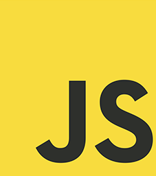
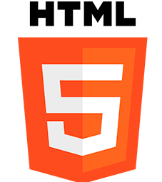
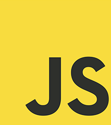
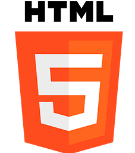
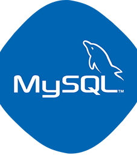

Experiencia
Estos son algunos de los lugares donde he trabajado.
Proyecto Qolca : Productos artesanales de la región de Piura. Es una tienda en línea, se dedica a la comercialización de artículos originarios de la región (cerámica, manejo en cuero y bisutería artesanal).
Objetivo : Proporcionar a las personas de la región la oportunidad de descubrir y adquirir productos piuranos desde el hogar, y aún así llevarse la experiencia regional.
 



Proyecto chat bot : Sistema automatizado de gestión de mensajes y respuestas personalizadas. Esto es un desarrollo de un sistema informático inteligente que interactúa con los usuarios de forma virtual, ofreciendo respuestas automáticas basadas en algoritmos y reglas predefinidas.
Objetivo : Facilitar la comunicación y brindar asistencia a los usuarios de manera eficiente y rápida.

Proyecto ventas : Sitio web para la venta de ropa, donde se podrá visualizar y realizar la compra de ropa de alta calidad, ademas de brindar a los usuarios la oportunidad de explorar una amplia selección de ropa.
Objetivo : Proporcionar a los clientes una experiencia de compra conveniente y satisfactoria. Mediante la página web, los usuarios podrán navegar por diferentes categorías de ropa.
Mis habilidades
Estos son algunos de los lenguajes de programación, herramientas tecnológicas y conceptos con los que tengo experiencia.
Diseño
Adobe photoshop
Adobe Illustrator
Sony Vegas
Interfaz
HTML y CSS
JavaScript
Módulos CSS-in-JS y CSS
Back-end
Node js
MySQL y Sql
API REST
Contacto
¿Tienes una oportunidad laboral o una idea que quieres llevar a cabo?.
No dudes en ponerte en contacto conmigo a través del correo electrónico dgutierrezcarmen2@gmail.com, o a través de mis redes sociales en Whatsap, Instagram, TikTok y YouTube